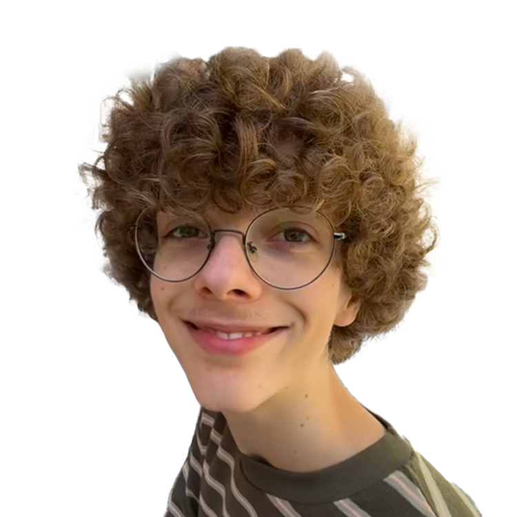

Kinderboek Design
Ontwerp en uitvoering van een handgeschilderd kinderboek voor een reclamebureau.
Creatief / Minimalistisch / Efficiënt
Designer die buiten de standaard Pinterest-kaders denkt en focust op wat echt werkt.

Ik ben Floris Ooms. Mijn aanpak is simpel: ik geloof niet in de standaard Pinterest-designs. Ik werk gefocust en efficiënt om unieke visuele oplossingen te creëren. Hoewel ik mijn weg in het programmeren nog aan het vinden ben, ligt mijn kracht in het durven afwijken van de norm.
Waarom DVO? Omdat ik een plek zocht waar mijn creativiteit een doel krijgt.
Ontwerp en uitvoering van een handgeschilderd kinderboek voor een reclamebureau.
Inzetten van technische print-vaardigheden voor unieke raamontwerpen.
Een studie in compositie en kleurgebruik zonder beperkingen.